Revista Señales Nº 23, vol. XIII (2) 2020 | Revista científica en infancia vulnerable y jóvenes que han infringido la ley
https://www.sename.cl/web/index.php/revista-senales/ ISSN Nº 0719 – 2266
Percepciones de Niños, Niñas y Adolescentes en Residencias Familiares: Un Enfoque basado en la Residencialidad emocionalmente Segura
Perceptions of Children and Adolescents in Family Residences: An Approach based on Emotionally Safe Residentiality
Felipe Cáceres Merello y Bernardita Cárdenas Maturana1
Servicio Nacional de Menores
Santiago – Chile
Recibido:25.9.2020 Aprobado: 03.12.2020 Publicado:30.12.2020
Resumen
La primera Encuesta de Condiciones de Vida de Niños, Niñas y Adolescentes en Residencias Familiares busca conocer las percepciones de ese grupo sobre su experiencia cotidiana durante su permanencia en una Residencia Familiar, el nuevo modelo de cuidados alternativos de administración directa del Servicio Nacional de Menores (Sename). La encuesta es parte de un conjunto de herramientas desarrolladas por la Unidad de Implementación de Residencias Familiares del Departamento de Protección de Derechos de este servicio, destinadas a hacer un seguimiento y monitoreo a la puesta en marcha y funcionamiento de las residencias. En este caso, se trata de evaluar la calidad subjetiva de las actividades y procesos en relación a la construcción de una Residencialidad Emocionalmente Segura, uno de sus componentes centrales. Las conclusiones del estudio, pese a ser el primer sondeo en esta nueva modalidad de Residencias Familiares, buscan abrir la discusión, entregando elementos que permitan seguir profundizando en la capacidad del reciente modelo en implementación, para entregar una experiencia basada en el respeto, la protección y el buen trato, considerando como insumo relevante la opinión de los propios niños, niñas y adolescentes.
Palabras clave: Cuidados alternativos residenciales, encuesta, participación infantil.
Abstract
The first Survey of Living Conditions of Children and Adolescents in Family Residences seeks to know the perceptions of this group about their daily experience during their stay in a Family Residence, the new model of alternative residential care directly administered by the National Service for Minors (Sename). The survey is part of a set of tools developed by the Family Residences Implementation Unit of this service, intended to follow up and monitor the start-up and operation of these residences. In this case, it is about evaluating the subjective quality of the activities and processes in relation to the construction of an Emotionally Safe Residentiality, one of its central components. Being the first survey of this type in Family Residences, the conclusions of the study seek to open the discussion, providing elements that allow to continue deepening the capacity of the new care model to deliver an experience based on respect, protection and good treatment, considering as a relevant input the opinion of the children and adolescents themselves.
Keywords: Alternative residential care, survey, child participation.
Introducción
Las Residencias Familiares (RF) son la concreción de una de las 94 propuestas contenidas en el Acuerdo Nacional por la Infancia, publicado en mayo del año 2018 y que propone, entre otras, mejorar el cuidado residencial y los procesos de intervención para la recuperación psicosocial y restitución de los derechos de los niños, niñas o adolescentes atendidos. Para ello, se implementan residencias con menor cobertura de atención simultánea en pos de una atención personalizada (con un máximo de 15 niños y niñas por casa), diferenciadas de acuerdo al curso de vida (exceptuando el caso de hermanos) y en ambientes desinstitucionalizadores más cercanos a un espacio familiar, avanzando, de esta forma, hacia el cumplimiento de las Directrices sobre las modalidades alternativas de cuidado de los niños de las Naciones Unidas (2010) y de las sucesivas recomendaciones del Comité de Derechos del Niño al Estado de Chile en materia de cuidados alternativos residenciales.
La implementación de las RF comienza a fines del año 2018 con la apertura de la primera residencia en la ciudad de Coyhaique y continúa, a comienzos de 2019, con el cierre del CREAD2 Playa Ancha y la apertura de cinco RF en la región de Valparaíso. Actualmente existen dieciseis Residencias Familiares en seis regiones del país: 2 en Arica; 5 en la región de Valparaíso (en las comunas de Quillota, Villa Alemana, Quilpué, Viña del Mar, Valparaíso); 5 en la región Metropolitana (en las comunas de Providencia, Santiago y San Miguel); 2 en Concepción, región del Biobío; 1 en la región de Aysén (comuna de Coyhaique) y 1 en Punta Arenas, región de Magallanes3. Las RF actualmente en funcionamiento consideran dos tipos de residencias de acuerdo al tramo etario de la población atendida: RFAT (Residencias Familiares para Adolescencia Temprana) y RFA (Residencias Familiares para Adolescentes).
Con la finalidad de generar información, conocimiento y aprendizajes para observar y verificar el avance en la implementación y el cumplimiento de objetivos asociados al modelo de Residencias Familiares, es que la Unidad de Implementación ha desarrollado el Plan de Monitoreo a la Implementación de las Residencias Familiares, que consiste en un conjunto de herramientas que buscan incorporar una mirada integral al seguimiento de la puesta en marcha de estas residencias.
De esta manera se propone un proceso de implementación que entregue la posibilidad de un ajuste permanente entre sus decisiones y acciones con el objetivo de optimizar los resultados (INDES, 2006).
Este plan es una iniciativa que pretende cumplir con la necesaria función de evaluación y seguimiento, como parte de la demanda de transparencia, eficiencia y eficacia en la gestión de la política pública (Unesco, 2006). En este ámbito, dicho plan pone a disposición sus principales resultados, de manera de proponer una discusión en relación a una política pública que busca “instalar una nueva mirada” sobre la atención a la niñez y adolescencia separada transitoriamente del medio familiar debido a situaciones de grave vulneración de sus derechos.
La Encuesta de Condiciones de Vida de Niños, Niñas y Adolescentes en Residencias Familiares vv(RF); es parte importante de esta iniciativa, en tanto busca conocer y presentar los resultados de las actividades y procesos asociados a la implementación de las RF en relación a la calidad subjetiva de los mismos; es decir, más que evaluar el desempeño de la atención en Residencias Familiares respecto de un estándar, se trata de indagar en cómo esta es percibida y vivenciada. Considera, por tanto, las aspiraciones, motivaciones e intereses de los propios niños, niñas o adolescentes atendidos en relación a su cotidianeidad en cada residencia.
La encuesta representa igualmente un esfuerzo por revertir la falta de protagonismo que aún mantiene la niñez y adolescencia en la agenda política y social, en relación a la escasez de mecanismos de consulta y participación que le permita expresar su opinión (y que esta sea considerada) en los asuntos que le afectan directamente. En ese sentido, y desde un enfoque de derechos, esta encuesta busca ser una herramienta para acercar la mirada de niños, niñas y adolescentes atendidos en Residencias Familiares a la toma de decisiones.
Residencialidad Emocionalmente Segura
El modelo de Residencias Familiares tiene como base la idea de que una vinculación estable y segura de un niño, niña o adolescente con las personas con las que mantiene un contacto cotidiano, permite establecer condiciones favorables para una intervención residencial eficaz en interrumpir y reconducir trayectorias de vida marcadas por graves vulneraciones de derechos.
Los procesos cognitivos y emocionales que se producen en la interrelación entre el niño, niña o adolescente con una persona significativa construyen estrategias auto-protectoras, ya que otorgan un orden temporal y predictibilidad a los contextos en los que se vivencian esas interrelaciones (Crittenden, 2002). Asimismo, establecen factores de protección y confianza que favorecen que los niños, niñas y adolescentes tengan mayores posibilidades de desarrollar al máximo su potencial como individuos.
La motivación y conducta del niño o niña hacia un adulto significativo y la respuesta utilizada por este último configuran un sistema de apego que permite en el niño o niña el desarrollo de estrategias auto-protectoras, las que otorgan un orden temporal y predictibilidad a los contextos en los que se desenvuelven, y que son denominadas patrones de apego (Crittenden, 2002). Cuando la relación con un adulto significativo o cuidador no entrega la protección y seguridad esperada, se organizan estrategias de comportamiento más extremas o disfuncionales que permitan obtener alguna medida de seguridad y confort de un entorno que, de lo contrario, sería amenazante (Horno, 2018).
La posibilidad de que un niño, niña o adolescente establezca una vinculación estable y positiva con quienes asumen su cuidado, resulta uno de los aspectos basales para el éxito de la intervención (Dumaret, Donati, & Crost, 2011), en la medida que permita progresivamente ir abandonando los mecanismos disociativos que ese niño, niña o adolescente tuvo que activar para sobrevivir (Horno, Echeverría, & Juanas, 2017).
En esa línea, un aspecto fundamental de la intervención terapéutica en el nuevo modelo de Residencias Familiares lo representa la idea de Residencialidad Emocionalmente Segura (RES), que considera la construcción de la cotidianidad basada en un ambiente de cuidado acogedor, protector y promotor del bienestar de cada niño, niña o adolescente, apuntando a establecer un lugar de anclaje seguro y de una carga emocional positiva en el cual trabajar la interrupción y resignificación del daño provocado por las vivencias de graves vulneraciones de derechos.
La Residencialidad Emocionalmente Segura representa esa sensibilidad de las y los adultos cuidadores que permita captar lo que el niño o niña podría estar sintiendo, necesitando y expresando (Lecannelier, 2016) y, al mismo tiempo, esa posibilidad de que el propio niño o niña pueda sentirse en un ambiente donde se le respeta de modo irrestricto, recibe cotidianamente reconocimiento y valoración y es protegido y amparado en toda circunstancia (Céspedes, 2017). En ese aspecto, es fundamental diferenciar la seguridad del control. Una persona tiende a sentirse segura cuando no necesita controlar su entorno y puede entregarse a la vivencia presente sin temores, lo que es especialmente crítico en niños, niñas y adolescentes que han debido estar controlando su entorno permanentemente como herramienta de supervivencia (Aldeas Infantiles SOS, 2018).
Desde el modelo de Residencias Familiares, la RES, puede ser operacionalizada desde cuatro dimensiones generales:
a. Entorno físico protector, expresado en las características, distribución, accesibilidad, ornamentación de los espacios en la residencia e incluso la capacidad de entregar cierto grado de privacidad a cada niño, niña o adolescente (Aldeas SOS, 2018).
b. Estructura cotidiana, o la construcción de hábitos y rutinas para que les sea posible internalizar con mayores certezas el presente y el futuro inmediato (Kielhofner, 2004), considerando las particularidades de cada niño, niña o adolescente.
c. Adultos conscientes y garantes: Equipos de intervención que reconocen en el lenguaje verbal y no verbal las herramientas para moldear emociones positivas y un apego seguro (Horno, 2018), considerando que todo contacto es una intervención terapéutica.
d. Niños, niñas y adolescentes protagonistas: Una atención acorde a las necesidades individuales, incluyendo el fomento de la participación en las decisiones sobre sus procesos de intervención, con respeto por su historia personal y familiar (ONU, 2010).
En ese aspecto, la RES instala una visión de proceso, donde las intervenciones son evaluadas de manera sistemática y de acuerdo a cada niño, niña y adolescente; donde el foco de la intervención no está puesto en la conducta, sino en la persona, en su historia de vida, necesidades y recursos. Consecuentemente, la RES no busca una inmediata reacción favorable por parte de los niños, niñas y sus familias, ni tampoco condicionar los progresos de la misma a la aparición de algún desajuste o desregulación conductual-emocional, puesto que se entienden como expresiones del dolor psíquico.
La encuesta
El objetivo general del estudio es conocer las percepciones de los niños, niñas y adolescentes atendidos en Residencias Familiares sobre su experiencia cotidiana en dichas residencias, en las que debieran estar experimentando el ambiente emocionalmente seguro ya descrito.
Es un estudio cuantitativo basado en encuestas presenciales auto-aplicadas (respondidas por los propios niños, niñas y adolescentes) a la población atendida en las 12 Residencias Familiares en funcionamiento al momento de la realización del estudio. La decisión de utilizar un instrumento de autoaplicación se fundamenta en la necesidad de resguardar la confidencialidad en las respuestas y la no intervención de personas adultas en las mismas. En ese ámbito, existen antecedentes sobre estudios en niños, niñas y adolescentes respecto de brechas entre los reportes de padres, madres o cuidadores y el realizado por los propios niños, niñas y adolescentes (Mindeso, 2013).
El rango de edad de las y los respondientes oscila entre los 6 y los 18 años, con un promedio de 14 años y una mediana de 15 años. Se aplicaron dos cuestionarios con algunas diferencias entre sí de manera de acercar el lenguaje utilizado a la realidad de cada tramo etario (de 6 a 12 años y de 13 a 18 años), aunque ambos contaron con los mismos tipos de pregunta-respuesta (abiertas, dicotómicas y tipo escala Likert), lo que permite un análisis integrado.
Desde el punto de vista ético y de un enfoque de derechos, la encuesta tuvo un carácter voluntario, por lo que fue solicitado el consentimiento por parte del propio niño, niña o adolescente.
La encuesta fue aplicada entre la segunda quincena de abril y la primera quincena de mayo de 2020 a los niños, niñas y adolescentes atendidos que se encontraban presentes en la residencia durante ese período y que accedieron a participar del estudio. La base de datos del análisis contiene un total de 108 casos.
Se consideran cuatro dimensiones de análisis, que buscan medir las condiciones vinculadas a la Residencialidad Emocionalmente Segura, además de la satisfacción general asociada a la estadía en una residencia familiar.
1. Convivencia
Niños, niñas y adolescentes evalúan la relación entre ellos y las personas adultas de la residencia, además de la relación con sus pares, poniéndoles nota de 1 a 7 (como la escala de evaluación escolar, donde 1 es la menor nota y siete la mayor). Además, señalan si tienen una persona de confianza dentro de la residencia a quien acudir.
2. Rutina
Niños, niñas y adolescentes señalan las actividades que realizaron el día anterior en cuatro momentos del día (mañana, mediodía, tarde y noche), de manera de identificar la existencia de patrones ocupacionales en la rutina cotidiana.
3. Participación
Niños, niñas y adolescentes señalan si han sido parte de las decisiones que les afectan al interior de la residencia y si su opinión es tomada en cuenta a la hora de planificar las actividades que se realizan.
4. Satisfacción general
Niños, niñas y adolescentes identifican lo que más y lo que menos les gusta de la residencia, así como también evalúan su satisfacción con la residencia, con una nota de 1 a 7 (donde 1 es el menor valor y siete el mayor).
Entre los elementos a considerar, se debe tener en cuenta el diferente tiempo de funcionamiento que posee cada residencia, así como también el contexto de pandemia y confinamiento en el que se realizó el estudio. Además, en algunos casos no fue posible que el niño, niña o adolescente respondiera por sí mismo la encuesta, por lo que fue necesaria la ayuda de un adulto para contestar la misma.
Esta encuesta está planificada para ser aplicada de forma periódica, de manera de hacer seguimiento a las variaciones en los resultados.
Resultados
1. Convivencia
Los resultados en convivencia tienen un carácter ambivalente, en tanto se identifica una muy buena relación entre niños/as y adultos cuidadores, pero algunos problemas en la relación entre los propios niños/as. En efecto, para la pregunta sobre la nota con la que se evalúa la convivencia entre niños/as y adultos de la residencia, un 69% niños, niñas y adolescentes responde con notas 6 y 7 (Gráfico 1).
Gráfico 1: Nota a la convivencia entre niños/as y adulto
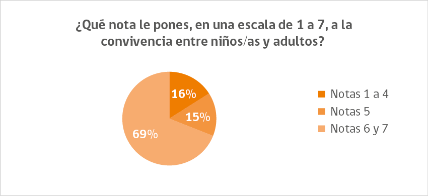
Las razones que más se repiten para justificar la evaluación anterior son “nos tratan bien” y “son buenas personas”. En la Imagen 1, la nube de palabras señala las frases de mayor tamaño y en tono rojo como las más frecuentes, seguidas de las frases en tono verde. Aquellas de color azul y más pequeñas, en tanto, son las menos frecuentes.
Imagen 1: Razones de la nota
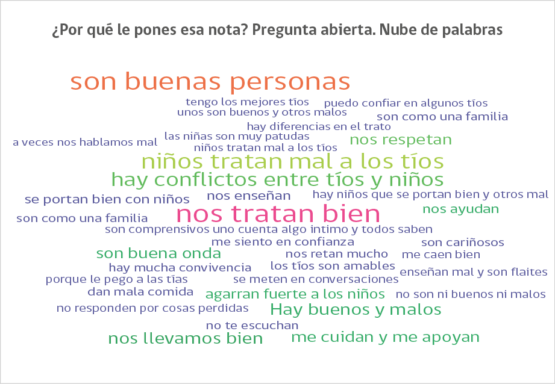
Por su parte, la pregunta que evalúa la convivencia entre los propios niños/as en la residencia, evidencia que la mitad de los niños y niñas evalúa con notas entre 1 y 4 la relación entre pares (Gráfico 2).
Gráfico 2: Nota a la convivencia entre niños/as
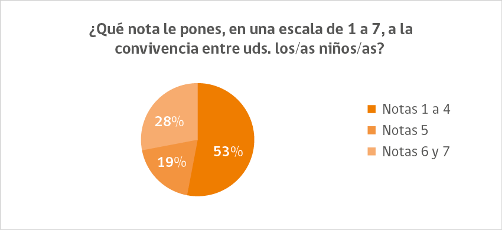
Las razones que más se repiten para justificar la evaluación anterior son “no me respetan y me hacen burla” y “peleas e insultos”. En la Imagen 2, la nube de palabras señala las frases de mayor tamaño y en tono rojo como las más frecuentes, seguidas de las frases en tono verde. Aquellas de color azul y más pequeñas, en tanto, son las menos frecuentes.
Imagen 2: Razones de la nota
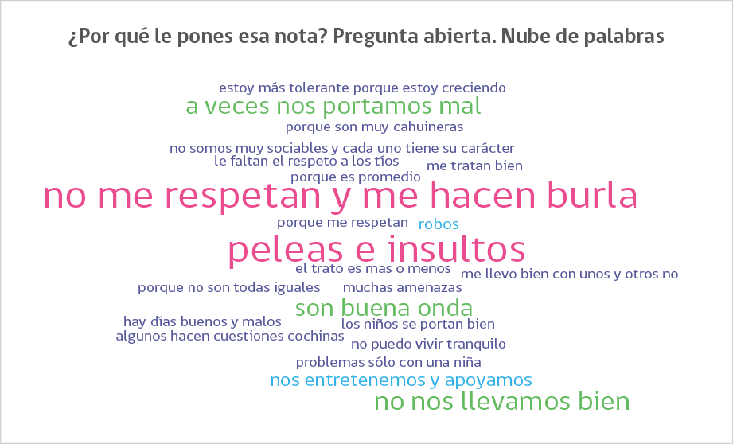
Respecto a la posibilidad de establecer lazos de confianza al interior de una Residencia Familiar, un 92% de los niños, niñas y adolescentes considera que al menos tiene una persona a quien acudir cuando requiere apoyo y connivencia. De este porcentaje, la mayoría, un 67%, considera que esa persona de confianza es únicamente un adulto, mientras que un 21% señala que puede confiar tanto en adultos como en niños y niñas de la residencia (Gráfico 3).
Gráfico 3: En quienes confía
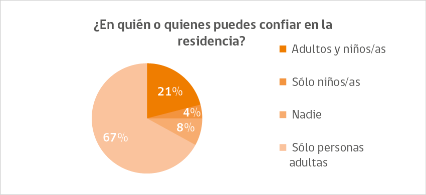
2.- Rutina
Los resultados sobre la rutina de los niños, niñas y adolescentes en RF muestran el predominio de actividades básicas de la vida diaria (higiene personal y alimentación, fundamentalmente) junto a actividades de juego, ocio y tiempo libre. Ante la pregunta: ¿Qué es lo primero que hiciste ayer en la mañana?, resaltan “bañarse”, “tomar desayuno” y “ordenar la pieza” (Gráfico 4). Ante la pregunta ¿Y qué hiciste después de eso?, destacan “tomar desayuno”, “jugar” y “hacer tareas” (Gráfico 5). Luego, para la pregunta ¿Qué haces después de almuerzo?, las respuestas mayoritarias son “jugar”, “ver televisión” y “salir de paseo” (Gráfico 6). Por último, ante la pregunta ¿Y qué hiciste en la noche, antes de acostarte?, resaltan “ver televisión” y “cenar” (Gráfico 7).
Gráfico 4: Actividades de la mañana*
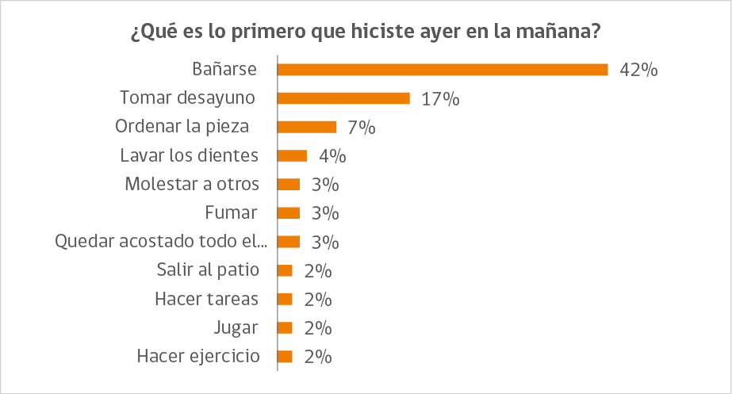
*Sólo se presentan las respuestas sobre el 2% del total
Gráfico 5: Actividades del mediodía*
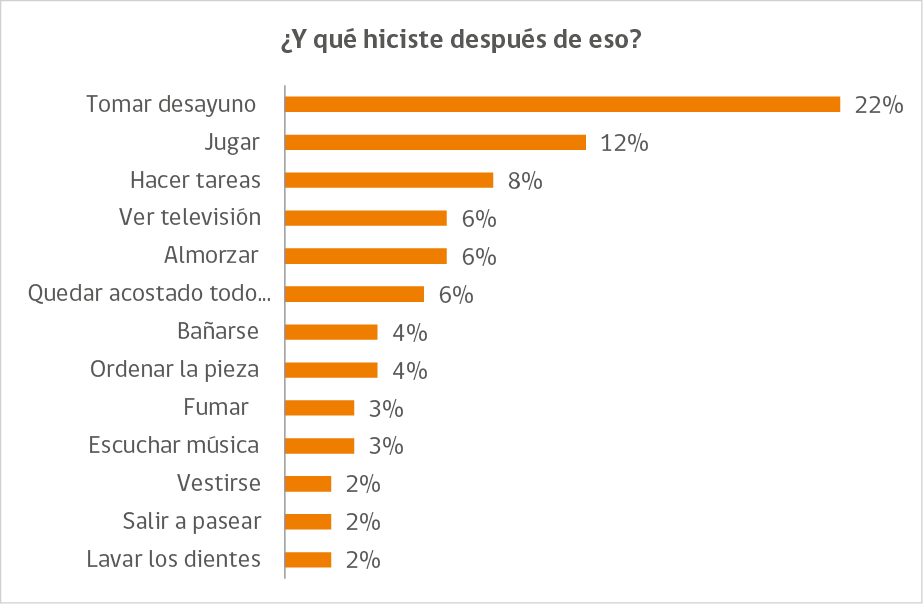
*Sólo se presentan las respuestas sobre el 2% del total
Gráfico 6: Actividades de la tarde*
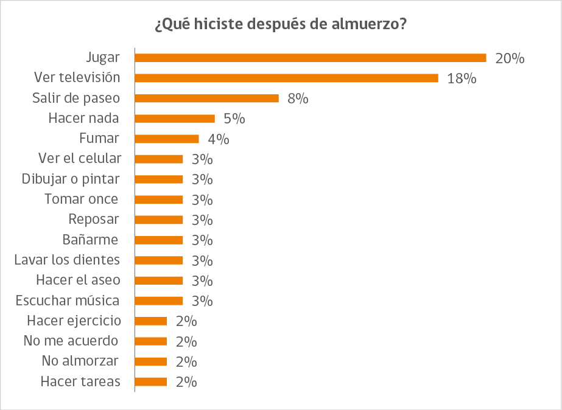
*Sólo se presentan las respuestas sobre el 2% del total
Gráfico 7: Actividades de la noche*
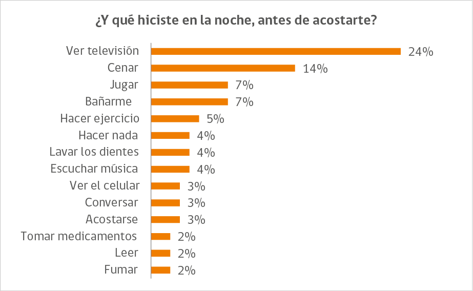
*Sólo se presentan las respuestas sobre el 2% del total
3.- Participación
Los resultados en participación muestran que el 75% de los niños, niñas y adolescentes declara practicar actividades y pasatiempos que son de su interés (Gráfico 8). Asimismo, un 74% considera que su opinión es tomada en cuenta por los adultos al momento de acordar las normas y reglas de convivencia al interior de la residencia (Gráfico 9).
Gráfico 8: Actividades de interés
Gráfico 9: Si opinión es considerada
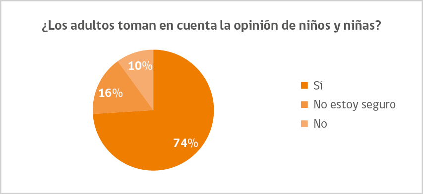
Satisfacción con la residencia
Los resultados en el ámbito de la satisfacción con la residencia muestran, por una parte, una evaluación positiva de niños, niñas y adolescentes, tanto del entorno en el que viven como de las actividades que ahí desarrollan. Ante la pregunta sobre qué es lo que más les gusta de la residencia, las respuestas más frecuentes son “los juegos y actividades”, “la casa y el patio” y “los tíos y tías” (Gráfico 10). Por otra parte, se ratifica que la relación entre pares es el aspecto negativo más sentido por niños, niñas y adolescentes. Ante la pregunta sobre lo que menos les gusta, la respuesta más frecuente es “las peleas entre niños” (Gráfico 11).
Gráfico 10: Lo mejor de la residencia*
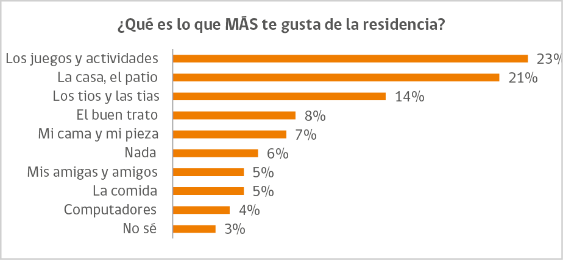
*Sólo se presentan las respuestas sobre el 2% del total
Gráfico 11: Lo peor de la residencia*
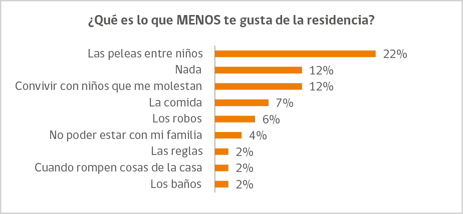
*Sólo se presentan las respuestas sobre el 2% del total
En relación a la satisfacción general con la residencia, la mayoría de los niños, niñas y adolescentes evalúa con notas 6 y 7 la pregunta ¿Qué nota le pondrías a tu vida en la residencia? (Gráfico 12).
Gráfico 12: Satisfacción general con la residencia
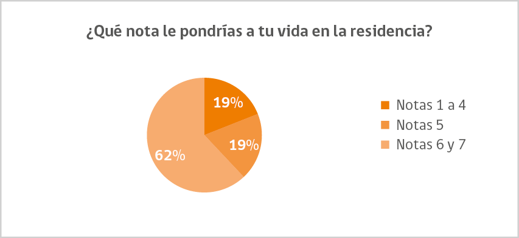
Conclusiones
Los resultados muestran en general que el modelo de Residencias Familiares se encuentra aún en una etapa de estabilización en la que, si bien ha logrado instalar elementos fundamentales para su funcionamiento, aún requiere reforzar otros que le permitan establecer un equilibrio en sus procesos, de manera de cumplir a cabalidad con la principal promesa de las RF: la construcción de una Residencialidad Emocionalmente Segura.
Este panorama general, sin embargo, debe analizarse considerando que su modelo de intervención propone una mirada distinta a la manera en que tradicionalmente se ha abordado el cuidado alternativo residencial de la niñez y adolescencia víctima de vulneración de derechos, lo que implica un cambio a todo nivel que aún se encuentra en etapa de transición.
En efecto, los procesos internos de las Residencias Familiares dependen de una permanente integración y coordinación con el entorno, fundamentalmente con los distintos sectores prestadores de servicios del territorio (salud y educación, entre otros) y con la propia comunidad, de manera que estos efectivamente actúen como garantes de derechos (de manera de trascender la condición de “institución total” en la que se habían convertido los CREAD). En la práctica cotidiana, sin embargo, el trabajo intersectorial sigue siendo complejo en un contexto en el que el aparato público mantiene lógicas de funcionamiento parceladas según sector, mientras que las comunidades y barrios aledaños a las residencias en general asumen posturas refractarias a la instalación de una residencia cercana. Asimismo, algunas Residencias Familiares han debido atender una población mayor al número máximo que señalan las Orientaciones Técnicas del modelo debido, entre otros aspectos, a la falta de oferta de cuidados alternativos residenciales en algunos territorios, lo que va en desmedro de una atención personalizada acorde a las características de cada niño, niña y adolescente.
Con todo, al analizar las dimensiones vinculadas a una Residencialidad Emocionalmente Segura, los problemas en las relaciones entre pares aparece nítidamente como un aspecto que debe levantar las alertas para profundizar el trabajo pedagógico de los equipos de intervención en torno a instalar prácticas respetuosas y bien tratantes y promover estrategias de manejo de conflictos4. Si bien es en alguna medida esperable que ocurran dificultades, y que los resultados de los procesos terapéuticos tarden en llegar en este ámbito (debido a las condiciones de socialización disfuncional y de salud mental que caracterizan a la población atendida5, y que los programas e instituciones anteriores fallaron en interrumpir o atenuar), se requiere de estrategias más específicas que puedan paulatinamente modificar esta situación, y que permitan resguardar a niños, niñas y adolescentes de experiencias cotidianas que puedan estar bajo amenaza de situaciones de violencia y/o desajustes emocionales.
A pesar de lo anterior, destacan otros dos aspectos ligados a la convivencia: los buenos resultados en la relación entre adultos cuidadores y niños/as y la percepción mayoritaria en relación a tener, al menos, una persona al interior de la residencia con quien sentirse en confianza y acogido. Ello representa una base importante que no sólo atenúa de alguna manera los resultados en las relaciones entre pares, sino que también permite vislumbrar buenas perspectivas de avance en ese aspecto.
Los resultados en rutina, en tanto, evidencian que las actividades básicas de la vida diaria y las actividades de juego y ocio son las que aparecen mayormente mencionadas, en contraste con aquellas vinculadas al estudio, la funcionalidad y la participación social, que son igual de importantes para alcanzar un equilibrio ocupacional cotidiano. Ello debe ser también un ámbito a mejorar, considerando que la organización y distribución equilibrada de actividades diarias en la residencia favorece un mayor control en el manejo de la vida del niño, niña o adolescente, así como también contribuye a su desarrollo integral en pos de su inserción en un circuito de oportunidades.
Estos datos vinculados a rutina, sin embargo, deben ser complementados con un análisis en específico de los patrones ocupacionales en cada residencia, en tanto cabe la posibilidad de que al momento de responder la encuesta, niños, niñas y adolescentes puedan estar recordando o identificando sólo aquellas actividades diarias que les parezcan más gratificantes o que involucren alguna recompensa (Gruber et al., 2016). De igual manera, se debe tener en cuenta el contexto de crisis sanitaria que ha llevado a condiciones de confinamiento preventivo, lo que condiciona el establecimiento de rutinas balanceadas.
Los resultados en participación muestran que los niños, niñas y adolescentes se sienten parte de las decisiones, tanto de sus actividades diarias como de las normas de convivencia en la residencia. No obstante, se requiere profundizar en este aspecto, en tanto esta percepción positiva de la participación en las decisiones (especialmente sobre la elección de las actividades diarias) puede relacionarse, como muestran los datos vinculados a rutina, con el predominio de las actividades de juego y ocio (que son las que comúnmente generan mayor interés) por sobre otras que involucran el cumplimiento de responsabilidades escolares y funcionales.
Igualmente, se requiere de más insumos que permitan evaluar de manera integral el cumplimiento de una participación realmente sustantiva, es decir, que comprenda el necesario encuentro entre las capacidades de participación de la niñez y las oportunidades de participación que se le ofrecen, tanto en el diseño, como la ejecución y evaluación de los acuerdos (Sename, 2013). Efectivamente, la participación depende del fomento de la misma, de lo que se entiende por ella y del contexto en el que ocurre.
Todos estos resultados generales, aunque deben ser analizados en mayor profundidad con el detalle específico de cada residencia (de manera de establecer planes de acción y abordajes que consideren las particularidades y dinámicas de cada una), dejan elementos relevantes sobre los cuales poner atención y demuestran, al mismo tiempo, la necesidad de incluir de manera permanente y sistemática la opinión de niños, niñas y adolescentes en el diseño y evaluación de políticas y programas sociales que les afectan. Este fomento a la participación no se agota evidentemente con el desarrollo del presente estudio, sino que representa una más de un conjunto de iniciativas que buscan avanzar en esa materia.
Referencias
Aldeas Infantiles SOS (2018). La promoción de entornos seguros y protectores en Aldeas Infantiles SOS América Latina y el Caribe. Extraído de: https://www.aldeasinfantiles.org.uy/wp-content/uploads/2019/08/Entornos_Seguros_EspiralesCI.pdf
Crittenden, P. M. (2002). Nuevas implicaciones clínicas de la teoría del apego. Valencia, España: Promolibro.
Courtois, A., Van der Kolk, B. (2005). Editorial Comments: Complex Developmental Trauma. Journal of Traumatic Stress. Vol. 18, N.5.
Dumaret, A., Donati, P. & Crost, M. (2011). After a Long‐Term Placement: Investigating Educational Achievement, Behaviour, and Transition to Independent Living. Children & Society, 25(3), 215-227.
Gruber, M, Ritchey, M., Wang, S., Doss, M., Ranganath, C. (2016). Post-learning Hippocampal Dynamics Promote Preferential Retention of Rewarding Events. Neuron 89, 1110–1120. 2 de Marzo, 2016.
Horno, P., Echeverría, A., & Juanas, A. (2017). La Mirada consiente en los centros de protección. Madrid: CCS.
INDES (2006). Documento de trabajo Medición del desarrollo y políticas públicas. BID. Washington.
Kielhofner, G., (2004). Modelo de Ocupación Humana. Teoría y Aplicación. Buenos Aires, Argentina: Editorial Panamericana.
Lecannelier, F. (2013). El uso de la mentalización y la regulación emocional en programas de intervención temprana para el fomento de la seguridad en el apego. Extraído de en: http://revistamentalizacion.com/ultimonumero/06.pdf
Ministerio de Desarrollo Social (2013). Encuesta de Actividades de Niños, Niñas y Adolescentes: Manual de Cuestionario. Serie Documentos Metodológicos N°21.
ONU (2010). Directrices sobre las modalidades alternativas de cuidado de los niños
Extraído de: https://www.unicef.org/spanish/protection/files/100407-UNGA-Res-64-142.es.pdf
Sename (2018). Informe Auditoría Social a Centros de Administración Directa. Extraído de: https://www.sename.cl/web/wp-content/uploads/2016/10/Informe-Auditoria-Social-Centros-SENAME-1.pdf
Sename (2013). Bases técnicas línea de acción Oficinas de protección de derechos del niño, niña y adolescentes 2012-2015.
Sename (2018). Orientaciones Técnicas Residencias Familiares para Adolescentes.
Unesco (2006). El Sistema de Evaluación y Seguimiento de las Políticas y Programas Sociales. a experiencia del Ministerio de Desarrollo Social y Lucha contra el Hambre del Brasil. Policy Papers 17.
1 Profesionales Unidad de Implementación de Residencias Familiares del Departamento de Protección de Derechos. Correos electrónicos: felipe.caceres@sename.cl; bcardenas@sename.cl
2 Centro de Reparación. Especializada de Administración Directa (CREAD), modelo masivo de cuidados alternativos residenciales administrado por el Estado. En el caso del CREAD Playa Ancha, ubicado en Valparaíso, el Comité de Derechos del Niño (CDN) de las Naciones Unidas y la Comisión Interamericana de Derechos Humanos (CIDH) recomendaron en el año 2018 su cierre inmediato por las graves vulneraciones de derechos que ocurrían en su interior.
3 Dos de estas residencias (una en Providencia y la otra en Punta Arenas) iniciaron funcionamiento en septiembre del presente año, por lo que no están consideradas en este estudio.
4 Se trata, además, de un elemento que ya había sido identificada desde los CREAD como uno de los más sentidos por los propios niños, niñas y adolescentes (Sename, 2018).
5 Con población atendida, se hace referencia a niños, niñas, adolescentes y sus familias.